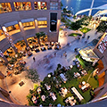

モール案内
汐留モール
汐留・新橋の百貨店・ショッピングモール・アウトレットモールの検索結果一覧。 汐留・新橋・虎ノ門・霞ヶ関の百貨店・ショッピングモール・アウトレットモールの情報が盛りだくさん。
ドリアンモール
シンガポールの中心街・オーチャードロードに古くからある小規模店舗群を時代の変化に合わせて整備・活性化すべく、2010年に計画が開始され翌2014年にオープンしたのがドリアンモールです。
タムリンモール

ジャカルタ中心部、BANK INDONESIA（インドネシア銀行）や日本大使館が建ち並ぶジャランタムリン（タムリン通り）に、タムリンモールは都市整備事業の一環として建設され2019年にオープンしました。